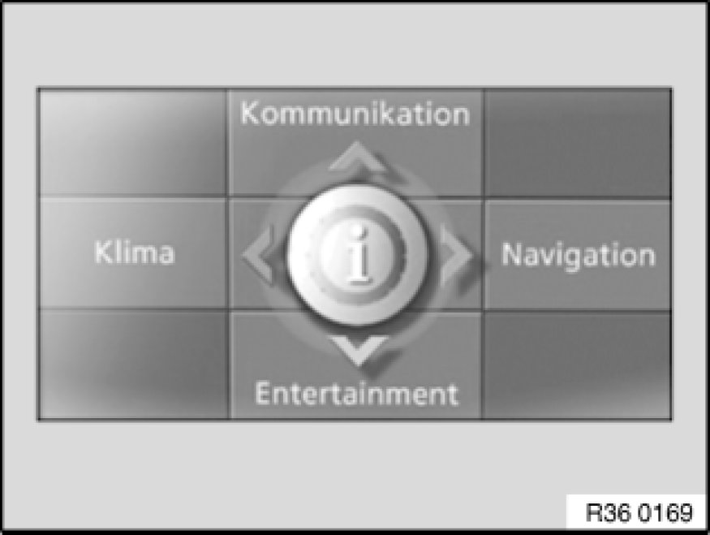

36 11 503 Resetting RDC (Tire Pressure Control)
36 11 503 - Resetting RDC (Tyre Pressure Control)

Note:
RDC monitors the tyre inflation pressure in the four wheels.
Each tyre incorporates an electronic wheel circuit, which constantly monitors the tyre inflation pressure.
The system signals when the inflation pressure drops in one or more tyres.
Resetting must be carried out in each case immediately after tyre pressures have been corrected, after tyres/wheels have been replaced and after repairs to the air spring system.

Version with iDrive:
- Press controller to call up i menu
- Select Settings and press controller
- Select Car/Tyres and press controller
- If necessary, switch to the top field. Turn controller until Tyres: RDC is selected and press controller
- Start engine but do not drive off
- Select Confirm tyre pressure and press controller
- Drive off. Initialization is completed during the journey

Version without iDrive:
- Start engine but do not drive off
- Touch direction indicator lever up or down until the corresponding symbol and RESET appear
- Press PC button to confirm selection of Run Flat Indicator
- Press PC button for approx. 5 seconds until a check/tick appears after RESET
- Drive off. Initialization is completed during the journey